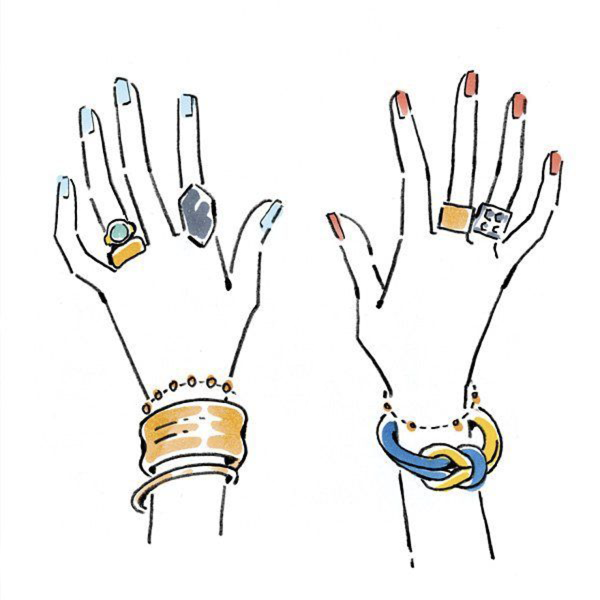
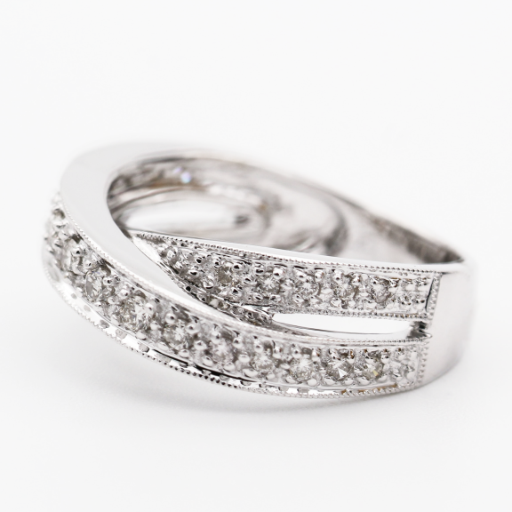
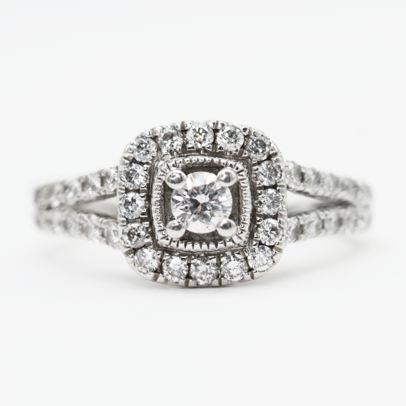
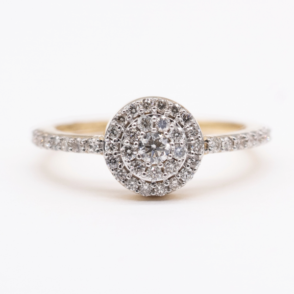
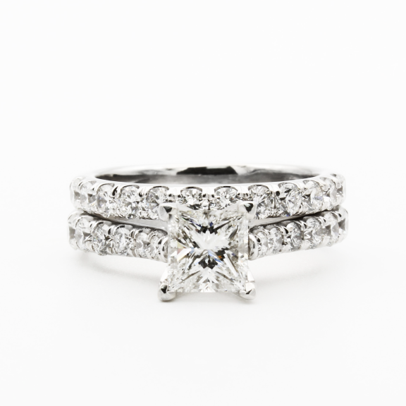
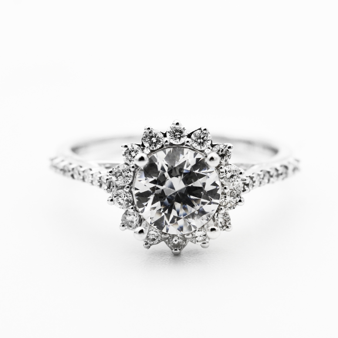
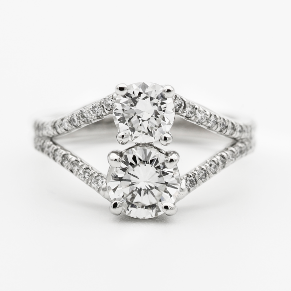
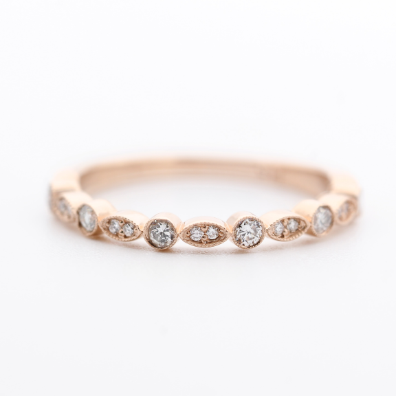
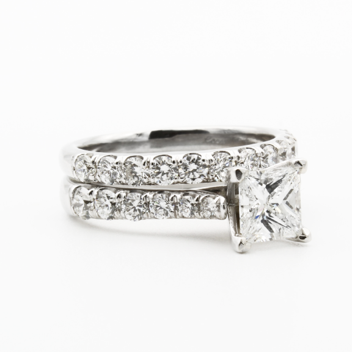

RING POWER
リングパワーについて
リングパワーとは、着用する指によって
様々なパワーを与えてくれると
言われているものです
例えば、左手の薬指につける
ブライダルリングもその一つだとされています
他の指も気になりませんか？
簡単な解説とぴったりなリングをご紹介します


左 信念を貫く
右 リーダーシップを発揮する
勇気をもたらす
存在感のある太めのデザインや大ぶり
のデザインがモードでお洒落な雰囲気
を出してくれるのでおすすめ

リング名
¥36,300

リング名
￥60,500
左 積極性アップ 背中を押してくれる
右 集中力アップ
親指との距離があることから大胆な
デザインが美しく、力強く見せてく
れるため側面も目立つためサイドの
デザインが凝った指輪や大振りで個
性的な指輪がおすすめ

リング名
￥189,200

リング名
¥141,900
左 直感力とひらめき力アップ
人間関係の改善
右 行動力アップ 意思が強くなる
指の中で一番長い存在感のある指なの
でボリュームのあるデザインやシンメ
トリーな指輪や大きめのストーンが
ついた指輪がおすすめ

リング名
¥269,500

リング名
¥78,100
左 願いを叶える 愛の象徴 愛や絆を深める
右 感性を高める 心を落ち着かせる
シンプルなデザインや指の縦ラインを
強調し指をほっそりと長く見せてくれ
るV字やU字のデザインがおすすめ
リング名
¥36,300
リング名
￥60,500
左 願いを叶える 恋やチャンスを呼び寄せる
右 魅力アップ 自分のお守り
シンプルなデザインや指の縦ラインを
強調し指をほっそりと長く見せてくれ
るV字やU字のデザインがおすすめ

リング名
￥161,700

リング名
¥30,250